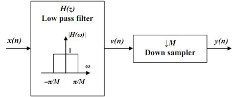
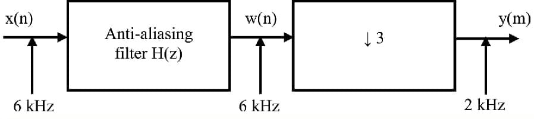

Decimation
Let us assume that the signal with spectrum X(n) is to be downsampled by an integer factor D. The spectrum X(w) is assumed to be nonzero in the frequency interval 0<= w <=pi or equivalently. |F|=Fx/2. We know that if we reduce the sampling rate simply by selecting every Dth value of x(n), the resulting signal will be an aliased version of x(n), with a folding frequency of Fx/2D.
To avoid aliasing. we must first reduce the bandwidth of x(n) to Fmax =Fx/2D or equivalently, to wmax=pi/D.Then we may downsample by D and thus avoid aliasing Hence in the decimation process. The input sequence x(n) is passed through a low pass filter, characterized by the impulse response h(n) and a frequency response Hd(w), which ideally satisfies the condition
Hd(w) = 1 , |w| = pi/D
= 0 , otherwise
Thus the filter eliminates the spectrum of X(w) in the range pi/D < w < pi. Of course, the implication is that only the frequency components of x(n) in the range |w| <= pi/D are of interest in further processing of the signal.
Decimation can be regarded as the discrete-time counterpart of sampling. Whereas in sampling we start with a continuous-time signal x(t) and convert it into a sequence of samples x[n], in decimation we start with a discrete-time signal x[n] and convert it into another discrete-time signal y[n], which consists of sub-samples of x[n]. Thus, the formal definition of M-fold decimation, or down-sampling, is defined by Equation . In decimation, the sampling rate is reduced from Fs to Fs/M by discarding M - 1 samples for every M samples in the original sequence.
y[n] = v[nM] = ∑k=-∞∞ h[k]x[nM-k]

The block diagram notation of the decimation process is depicted in Figure 9.1. An anti-aliasing digital filter precedes the down-sampler to prevent aliasing from occurring, due to the lower sampling rate. here we will discuss the concept of 3-fold decimation i.e. M = 3. Here, the samples of x[n] corresponding to n = …, -2, 1, 4,… and n = …, -1, 2, 5,… are lost in the decimation process. In general, the samples of x[n] corresponding to n ≠ kM, where k is an integer, are discarded in M-fold decimation. In Figure , it shows samples of the decimated signal y[n] spaced three times wider than the samples of x[n]. This is not a coincidence. In real time, the decimated signal appears at a slower rate than that of the original signal by a factor of M. If the sampling frequency of x[n] is Fs, then that of y[n] is Fs/M.
Let us consider the following example of decimation with anti aliasing filter and a frequency of 6khz with a down sampe of 3 is shown below.and let us consider, the input is x(n) and after passing through anti-aliaing filter,The output is w(n) and after downsampling with m = 3 the output is y(m).
